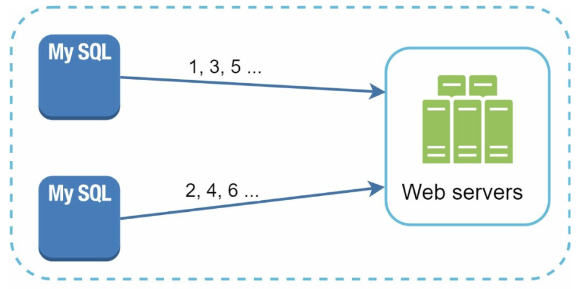
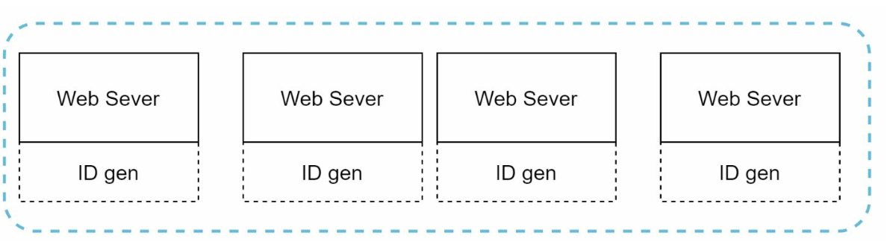

Chapter 7: Design a Unique ID Generator in Distributed Systems
Introduction
This chapter addresses the challenge of designing a unique ID generator for distributed systems. Traditional auto-increment keys are unsuitable in distributed environments due to scalability and synchronization challenges. The focus is on creating unique, sortable, 64-bit numerical IDs that meet the following requirements:
- IDs must be unique and ordered by date.
- IDs must fit within 64 bits.
- The system should generate over 10,000 IDs per second.
Step 1: Understanding the Problem
Basic Requirements
- IDs must be unique and numerical and should fit in 64 bits.
- IDs increment with time but not strictly by
+1. - IDs should be sortable by date.
- System must handle high throughput (10,000 IDs/sec).
Step 2: High-Level Design Options
1. Multi-Master Replication
- Approach: Use database
auto_incrementwith step increments (e.g.,+kfor k servers).

- Drawbacks:
- Hard to scale across data centers.
- IDs do not always increase with time.
- Scaling issues when servers are added/removed.
2. UUID (Universally Unique Identifier)
- Approach:
- Generate 128-bit unique identifiers independently on each server using UUID.
- UUIDs can be generated independently without coordination between servers

- Advantages:
- No coordination needed between servers.
- Scales easily with web servers.
- Drawbacks:
- Exceeds 64-bit requirement.
- IDs are not sortable by time and may be non-numeric.
3. Ticket Server
- Approach: Use a centralized database server to increment and assign IDs.

- Advantages:
- Simple to implement for small-scale systems.
- Generates numeric IDs.
- Drawbacks:
- Single point of failure.
- Synchronization challenges in multi-server setups.
4. Twitter Snowflake Approach
- Approach:


- Divide IDs into sections to ensure uniqueness and scalability.
- Sign Bit (1 bit): Always
0, potentially distinguishing signed and unsigned numbers. - Timestamp (41 bits): Milliseconds since a custom epoch (Twitter's default is
1288834974657, equivalent to Nov 04, 2010, 01:42:54 UTC). Ensures IDs are time-ordered. - Datacenter ID (5 bits): Identifies up to
2^5 = 32datacenters. - Machine ID (5 bits): Identifies up to
2^5 = 32machines within each datacenter. - Sequence Number (12 bits): Tracks IDs generated on a machine within the same millisecond, supporting up to
2^12 = 4096IDs per millisecond. The sequence resets to0every millisecond.
- Advantages:
- Scalability: Handles 10,000+ IDs per second across multiple servers.
- Time-Order: Ensures IDs are sortable by time.
- Decentralization: No single point of failure.
Step 4: Additional Considerations
1. Clock Synchronization
- Challenge: ID generation assumes synchronized clocks across servers.
- Solution: Use Network Time Protocol (NTP) to minimize drift.
2. Section Length Tuning
- Adjust section sizes (e.g., fewer sequence bits, more timestamp bits) based on use case.
3. High Availability
- ID generators are mission-critical and must be fault-tolerant.
- Consider redundancy and failover mechanisms.